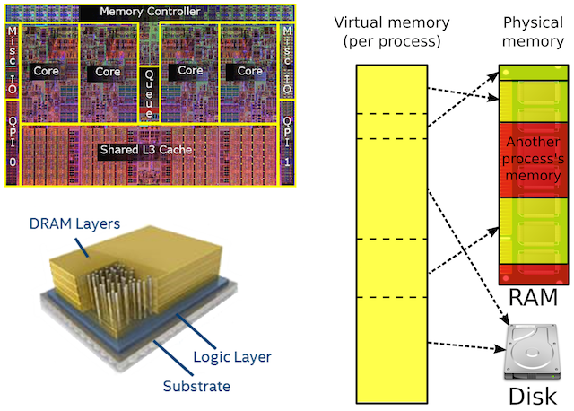

학생 연구원 모집
- 컴퓨터 시스템 연구(CPU/GPU/Memory/Storage 아키텍처, 운영체제/하이퍼바이저 등 시스템 소프트웨어)에 관심있는 학부 및 대학원생 모집
- 대학원생의 경우 전액 학비 보조(참고) 및 연구비 지원이 가능하고, 학부생의 경우 연구비 지원 가능합니다. (연구 장소 및 장비 제공)
- 유학 및 대학원 진학을 고려하고 있거나, 연구 경험을 해보고자 하시는 분들도 환영합니다.
- 연락처: jsahn@ajou.ac.kr로 이메일을 주세요.
{kind=link}
진행중인 연구 소개
본 연구실에서는 크게 미래의 클라우드 및 데이터센터를 위한 컴퓨터 시스템 전반(아키텍처, 운영체제, 가상 머신, 런타임 시스템)에 관심을 가지고 연구를 진행하고 있습니다. 이 외에도 관심있는 분야를 같이 공부하자고 제안하셔도 좋습니다.
-
새로운 컴퓨팅 자원(GPU, FPGA Accelerator, NVM 등등)을 활용한 분산 데이터 분석 플랫폼(Apache Spark) 개선
- 기존 Apache Spark의 경우 CPU 중심으로 설계가 되어 있는데 이를 GPU 및 Accelerator를 활용하여 성능을 개선하는 방향
- 이종의 메모리(heterogenous memory)가 사용될 경우에 memory management를 어떻게 하는것이 in-memory computing에서 좋을지에 관한 연구
-
가상 머신 기반의 클라우드 환경을 고려한 아키텍처 설계 및 시스템 소프트웨어 설계 및 구현
- 오픈 소스 하이퍼바이저(Xen / KVM)을 기반으로 새로운 메모리 메니지 관리 기법, 프로세서 스케줄링 기법을 개선 등의 연구
- 아키텍처 관점에서 가상화된 환경을 위해 컴퓨터 프로세서를 어떻게 설계하는 것이 효율적인지에 관한 연구
- 최근의 프로세서에 도입된 기술들 (캐쉬 공간 관리, 메모리 밴드위스 관리 등)을 활용한 자원관리 연구 등
-
미래의 클라우드 환경을 위한 컴퓨터 아키텍처(CPU/GPU) 개선 (Microarchitecture, Cache organization, Virtual memory support 등)
- 많은 양의 데이터를 처리하는 응용프로그램의 메모리를 효율적으로 관리하는 기법(Virtual memory) 연구
- 하드웨어적으로 가상 주소를 변환을 빠르게 해주는 TLB 구조 개선 연구
- 클라우드 환경에서 자주 사용되는 응용프로그램들의 메모리 사용 특징을 분석하고 이를 소프트웨어/하드웨어로 개선할 수 있는 방향에 대해서 고민